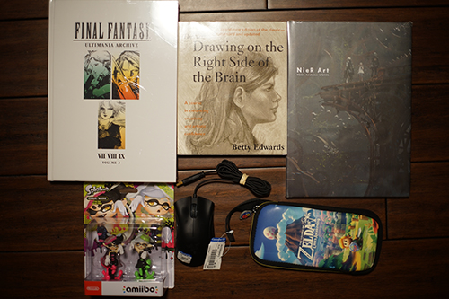
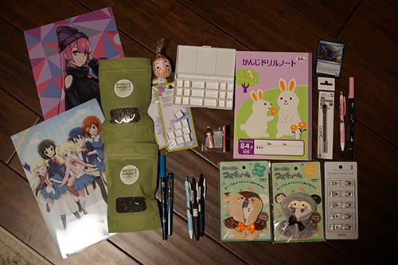

It was a big year for hats! This year's top funs include: goofing off, collecting thrift store junk, playing with dolls, hugging ryan more times than he wanted, and making my website stupidly big!!
Blog 68 marks the first post this year and this (140) is the final post of the year! Looks like I just barely lost to last year.
World record!!!! 5 books!!! the crowd cheers!
I posted my daily December doll prompt microblog posts in one place so feel free to enjoy them all at once!
My new years resolution was completed successfully. I managed to wish my friend a happy birthday on time this year! Next year's resolution: wish him a happy birthday on time again!
I hope next year will be filled with love, art, fun, and doll smoochies! I'll make it happen!
And of course, what would a hat blog be without Proof of Shopping Addiction. No one has emailed asking me to post my grocery store haul yet.
There was a sale for 50% off all hardcover books at the bookstore so I grabbed a couple things I've put off buying. Hopefully I have all the Nier artbooks now. Plus a gamestop and goodwill buys.
Another one checked off my "to buy for Ryan" list. He has to wait for his birthday though!
I'll draw your right brain, nerd.
I never thought they would rerelease these! They were super expensive in the past but I really wanted them for MSRP.
the scrollwheel doesn't work so I need to return it. I hate how goodwill wants your ID and won't give you anything more than a gift card.
Will my GBC + camera fit in it?? Surely something will fit in it.
I got a chance to go back to the art store (and skipped Blick) and a few other stationery and art stores with my friend!! I had so much fun looking through all the things.
I was so excited to buy my coworkers some pens!! I was going to buy each of them a Petit1... until there were no more Petit1s to be found ;_______; I tried to do my best to find them something anyway though. One of them specifically asked for a fountain pen and the other is a gel pen addict so I think my gifts will be okay.
Ryan wanted me to add his buys to the photo!
A gift for my mom!
If it tastes bad, it will also be a gift for my mom.
Came with 8 pans... after I already bought pans...
bunnies....
I found it on the ground
I have a blue jetstream but I really wanted a pink one.
For my coworker
For my coworker. I hope this and the blue tombow will be fun for her to draw with!
For my OTHER coworker. A gel pen fanatic needs to try one of these bad boys. I love em.
For my other coworker. She only likes dark colored inks (for reasons I can't comprehend) and this line has super pleasant and dark colors.
I needed more after the rainbow ones I got were awesome. No rainbow ones this time but this is fine. These are super useful in sewing.
I was looking for a second shitajiki to buy, but I only saw disney ones. I was also looking for spare .2 copic multiliner nibs and also didn't see those! Hopefully my pen will work perfectly until I find them. I plan on keeping this pen for a Very long time so I don't mind having replacement parts.
I noticed something good(?) while shopping. In one mall, there were 2 stores of locally made goods. I didn't go in to check if they were actually locally made, but I like to see that! The anime stores seemed to have legit figures for the first time ever. I did see many bootlegs but mostly of smaller merch. I also found out THEY FINALLY TRANSLATED THE PENGUINDRUM LNs??? Please tell me they're going to the Penguindrum collection 2 bluray. I love this series so much and I missed out on buying it because I had no money and now it's rare af.